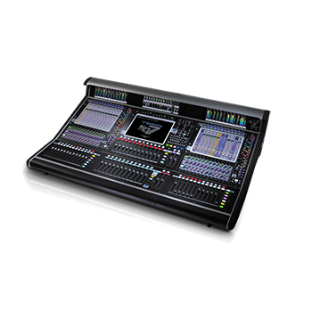

Digital
Quantum 7
Quantum 7 Digital Mixing Console
The fastest, smartest console ever created, Quantum 7 delivers the functionality, audio performance and sheer scale required to deliver the largest productions now and in the future. With Quantum 7, you have the power to tackle any challenge and truly own the room.